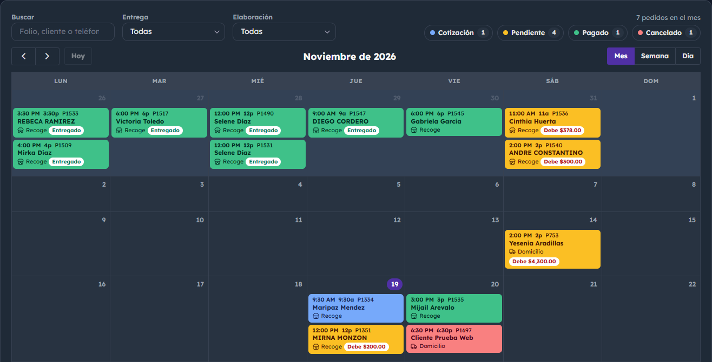
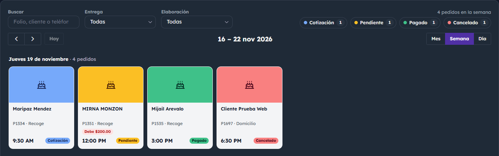
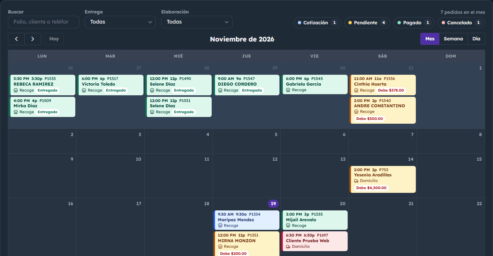
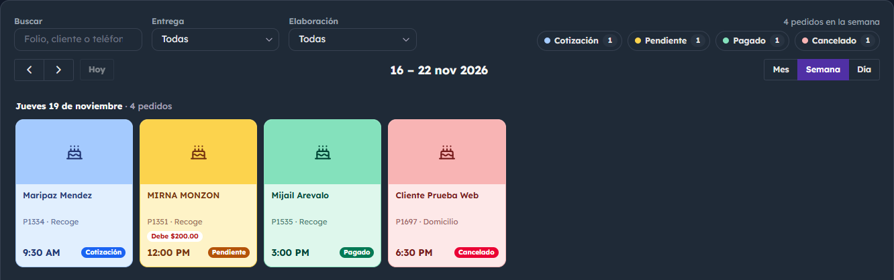
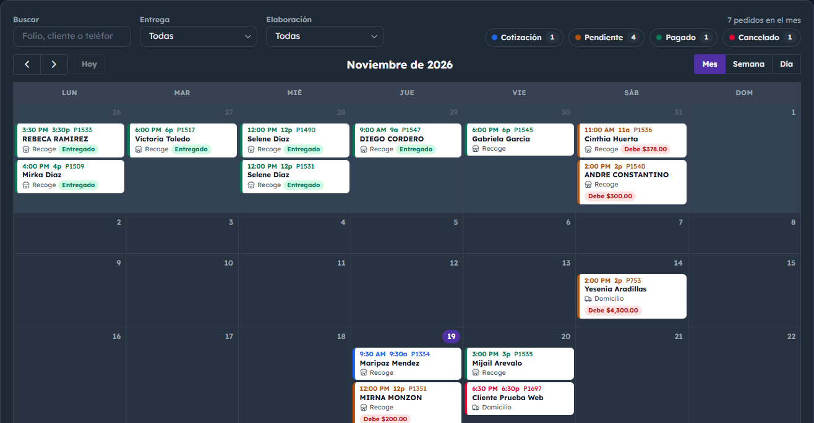
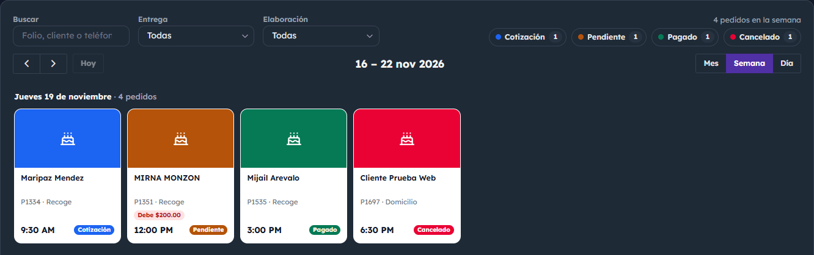
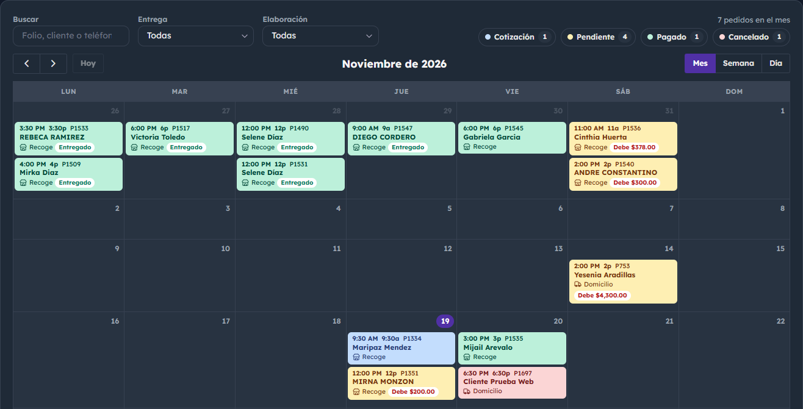
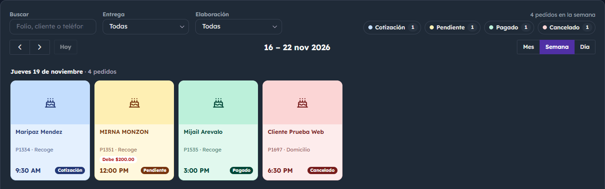

Tres maneras de pintar las tarjetas cuando la página está oscura. Las capturas son el calendario real con los mismos pedidos; solo cambia el color. En tema claro no cambia nada.
| Propuesta | Mes | Semana y Día | El estado se reconoce por |
|---|---|---|---|
| 1 · Color vivo | Relleno de color medio, letra oscura | Franja de color, cuerpo gris claro | Todo el relleno |
| 2 · Pastel con filo | Pastel muy suave con barra fuerte a la izquierda | Tarjeta pastel, franja más intensa | La barra y el tono |
| 3 · Blanca con acento | Blanca con barra de color y la hora en color | Igual que en tema claro | La barra, la franja y la píldora |
| Hoy | Pastel claro | Tarjeta casi blanca teñida | Un tono muy lavado |
Los tonos medios de Huubie UI (info, warning, success y un rojo suave), con la letra en el tono más oscuro de cada color. Es la que más se distingue de lejos.


Fondo pastel muy suave y una barra a la izquierda con el color fuerte del estado (el mismo del tema claro). En Semana la tarjeta entera va en pastel y la franja un tono más intenso.


La tarjeta va en blanco, como en tema claro. El color sale solo en la barra, la hora y la píldora del estado; en Semana, en la franja de arriba.


Para comparar: pastel claro en el Mes y tarjeta casi blanca teñida en la Semana.


tone() en order-calendar.js y el bloque «Calendario oscuro» de order.css. Sin migraciones.